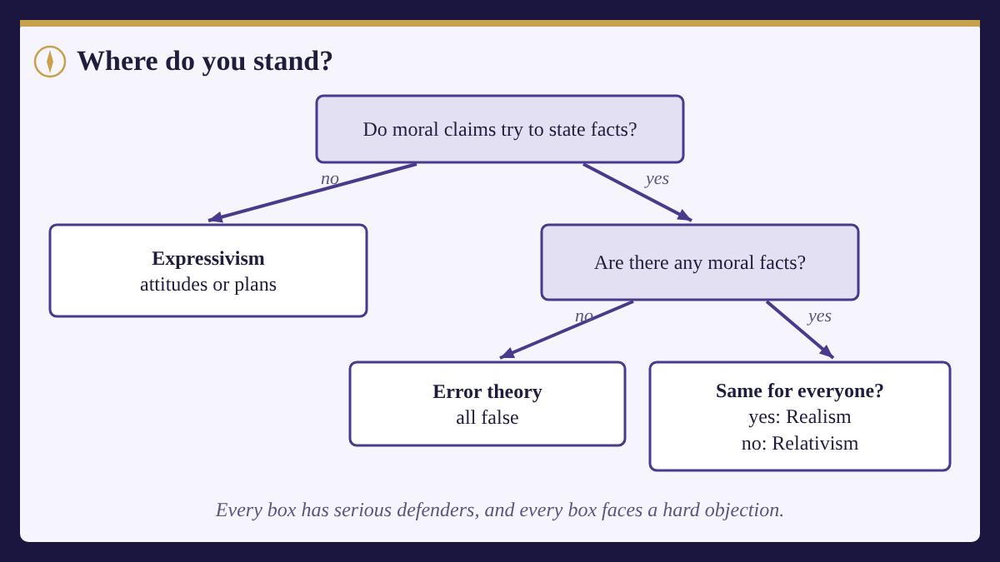

Card 1: A challenge from Plato's brother
For five sessions you've asked what morality is. Today's question is more personal: why should you care about it?
In Plato's Republic, written around 375 BCE, Socrates is challenged by Glaucon, Plato's older brother. Glaucon defends a view he says he doesn't believe himself: people only act justly because they're afraid of getting caught. He argues it as hard as he can because he wants to see it beaten. (That's called playing devil's advocate, which is also Rocky's job in this course.) He wants Socrates to prove that being just is worth it for its own sake.
To make his point, Glaucon tells a story.
Card 2: The ring of Gyges
Here is the story in this course's words.
Gyges was a shepherd who worked for the king of Lydia. One day a storm and an earthquake split open the ground where his sheep were grazing. Gyges climbed down and found a hollow bronze horse. Inside was a giant body wearing only a gold ring. Gyges took the ring.
Later, sitting with the other shepherds, he happened to twist the ring on his finger, and suddenly no one could see him. They talked about him as if he'd left. He twisted it back and reappeared. He tried it again and again, and it always worked.
Gyges then got himself sent to the royal court, where he used the ring's power to plot against the king, kill him, and take the kingdom.
Card 3: Glaucon's point
Then Glaucon asks us to imagine two such rings, one for a just person and one for an unjust person. Here's how he puts it:
Suppose now that there were two such magic rings, and the just put on one of them and the unjust the other; no man can be imagined to be of such an iron nature that he would stand fast in justice. No man would keep his hands off what was not his own when he could safely take what he liked out of the market, [section omitted] and in all respects be like a God among men. Then the actions of the just would be as the actions of the unjust; they would both come at last to the same point. And this we may truly affirm to be a great proof that a man is just, not willingly or because he thinks that justice is any good to him individually, but of necessity.
From The Republic, Book II, by Plato, translated by Benjamin Jowett (public domain), text from the Internet Classics Archive (MIT). "[section omitted]" marks a short part left out of this excerpt.
In other words: take away the chance of being caught, and everyone would behave badly. We're good only because we have to be.
Card 4: Plato's answer, in short
The rest of the Republic is Socrates' reply, and it's long. Very briefly, in this course's words: Socrates argues that justice is like health for the soul. An unjust person is at war with themselves, ruled by their appetites instead of their good sense, and that makes their life worse even if they never get caught. A just person is whole, balanced and free.
Whether that convinces you is part of today's question. Would you be worse off with the ring if you used it to take things?
Card 5: Does morality give everyone a reason?
Modern philosophers ask Glaucon's question in a new form: do moral rules give everyone a reason to follow them, even people who don't care?
Moral rationalists, like Russ Shafer-Landau, say yes. In this course's words: moral reasons apply to you whatever you happen to want, the way the rules of logic apply to you whether you like logic or not. Someone who doesn't care about morality isn't free of it; they're making a mistake.
Philippa Foot suggested in 1972 that morality might be more like etiquette. The rules of etiquette are real, and you can break them, but they only give you a reason to follow them if you care about the things etiquette protects. Maybe morality is the same: it binds people who care about others, and that's most of us, but it doesn't bind everyone by force of reason.
Card 6: Would a perfect person have a good life?
In 1982 the philosopher Susan Wolf turned the question around. Imagine a moral saint: someone who makes every single action as morally good as possible.
Wolf thought such a person would have little time for anything else. Her own examples: reading Victorian novels, playing the oboe, improving your tennis backhand. Today she might add perfecting a jump shot or a speedrun. Every spare minute would go to helping others. In this course's words, Wolf argued that this wouldn't be the best possible life, which suggests morality, important as it is, isn't the only thing that matters in a life.
Card 7: Real-world spark:The anonymous account
The internet handed everyone a version of Gyges' ring: the anonymous account. People sometimes post things with no name attached that they'd never say to someone's face.
Is that evidence Glaucon was right? Maybe. But plenty of people stay kind online even when no one could ever trace them. Some even do anonymous good: answering strangers' homework questions, posting helpful guides, leaving encouraging comments for no credit.
Every one of those people looks like a small piece of evidence against Glaucon. Glaucon might answer: they're kind because it makes them feel good about themselves, which is still a reward. Which side has more evidence in your own experience?
Card 8: Where do you stand?
You've now met the main answers to "Is anything really wrong?":
- Realism: some moral claims are true for everyone (naturalist or non-naturalist).
- Relativism: moral truth depends on a culture's or person's standards.
- Error theory: moral claims try to state facts, but there aren't any.
- Expressivism: moral claims express attitudes or plans, not facts.
A 2020 survey of about 1,800 professional philosophers, mostly at English-speaking universities, found that about 62% accepted or leaned toward moral realism and about 26% toward anti-realism. But a vote doesn't settle a philosophy question, and experts can be wrong. What matters is which view survives the best objections, and that's your call.
